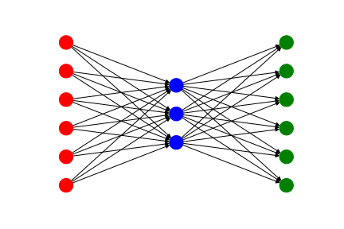

DeepNumerics 
Contents:
Getting started: Overview & Installation
Basics of Deep Learning
Multi-Layer Perceptron: Classification of handwritten digits (MNIST)
Denoising Autoencoder: Removing noise from the MNIST dataset
NumNeurNet
TBA
License
Help
DeepNumerics
Docs
»
Index
Index
A
|
B
|
C
|
D
|
E
|
F
|
G
|
I
|
L
|
M
|
N
|
O
|
P
|
R
|
S
|
T
|
V
|
W
A
Activation (class in NumNeurNet.activations)
Adagrad (class in NumNeurNet.optimizer)
Adam (class in NumNeurNet.optimizer)
add() (NumNeurNet.nn.Writer method)
addLayer() (NumNeurNet.nn.MLP method)
apply() (NumNeurNet.activations.Activation method)
(NumNeurNet.activations.Identity method)
(NumNeurNet.activations.LeakyReLU method)
(NumNeurNet.activations.ReLU method)
(NumNeurNet.activations.Sigmoid method)
(NumNeurNet.activations.Softmax method)
(NumNeurNet.activations.Tanh method)
(NumNeurNet.loss.CrossEntropy method)
(NumNeurNet.loss.Loss method)
(NumNeurNet.loss.MSE method)
Autoencoder (class in NumNeurNet.autoencoder)
B
backpropagate() (NumNeurNet.nn.MLP method)
backward() (NumNeurNet.layers.Dense method)
(NumNeurNet.layers.Layer method)
batches() (NumNeurNet.dataset.Dataset method)
C
close() (NumNeurNet.nn.Writer method)
CrossEntropy (class in NumNeurNet.loss)
D
Dataset (class in NumNeurNet.dataset)
Dense (class in NumNeurNet.layers)
derivative() (NumNeurNet.activations.Activation method)
(NumNeurNet.activations.Identity method)
(NumNeurNet.activations.LeakyReLU method)
(NumNeurNet.activations.ReLU method)
(NumNeurNet.activations.Sigmoid method)
(NumNeurNet.activations.Softmax method)
(NumNeurNet.activations.Tanh method)
(NumNeurNet.loss.CrossEntropy method)
(NumNeurNet.loss.Loss method)
(NumNeurNet.loss.MSE method)
downloadDataset() (NumNeurNet.dataset.Dataset method)
E
epsilon (NumNeurNet.activations.LeakyReLU attribute)
F
feedforward() (NumNeurNet.layers.Dense method)
(NumNeurNet.layers.Layer method)
(NumNeurNet.nn.MLP method)
funcFromStr() (NumNeurNet.activations.Activation static method)
G
get_source() (NumNeurNet.dataset.Dataset method)
getAccuracy() (NumNeurNet.nn.MLP method)
getGraph() (NumNeurNet.nn.MLP method)
getGraphFigure() (NumNeurNet.nn.MLP method)
getLoss() (NumNeurNet.nn.MLP method)
I
Identity (class in NumNeurNet.activations)
L
Layer (class in NumNeurNet.layers)
LeakyReLU (class in NumNeurNet.activations)
load() (NumNeurNet.layers.Dense method)
(NumNeurNet.layers.Layer method)
(NumNeurNet.nn.MLP method)
Loss (class in NumNeurNet.loss)
M
millis() (in module NumNeurNet.my_utils)
MLP (class in NumNeurNet.nn)
module
NumNeurNet
NumNeurNet.activations
NumNeurNet.autoencoder
NumNeurNet.dataset
NumNeurNet.layers
NumNeurNet.loss
NumNeurNet.my_utils
NumNeurNet.nn
NumNeurNet.optimizer
NumNeurNet.progressbar
NumNeurNet.visualization
MSE (class in NumNeurNet.loss)
N
NumNeurNet
module
NumNeurNet.activations
module
NumNeurNet.autoencoder
module
NumNeurNet.dataset
module
NumNeurNet.layers
module
NumNeurNet.loss
module
NumNeurNet.my_utils
module
NumNeurNet.nn
module
NumNeurNet.optimizer
module
NumNeurNet.progressbar
module
NumNeurNet.visualization
module
numParameters() (NumNeurNet.layers.Dense method)
(NumNeurNet.layers.Layer method)
O
optimize() (NumNeurNet.optimizer.Adagrad method)
(NumNeurNet.optimizer.Adam method)
(NumNeurNet.optimizer.Optimizer method)
(NumNeurNet.optimizer.RMSprop method)
(NumNeurNet.optimizer.SGD method)
Optimizer (class in NumNeurNet.optimizer)
P
plotGraph() (NumNeurNet.nn.MLP method)
predict() (NumNeurNet.autoencoder.Autoencoder method)
(NumNeurNet.nn.MLP method)
prettyTime() (in module NumNeurNet.my_utils)
progress() (in module NumNeurNet.progressbar)
R
ReLU (class in NumNeurNet.activations)
RMSprop (class in NumNeurNet.optimizer)
S
save() (NumNeurNet.layers.Dense method)
(NumNeurNet.layers.Layer method)
(NumNeurNet.nn.MLP method)
setBatchSize() (NumNeurNet.layers.Dense method)
setLearningFactor() (NumNeurNet.optimizer.Optimizer method)
SGD (class in NumNeurNet.optimizer)
showDatasetSources() (NumNeurNet.dataset.Dataset method)
showDownloadedDatasets() (NumNeurNet.dataset.Dataset method)
Sigmoid (class in NumNeurNet.activations)
Softmax (class in NumNeurNet.activations)
T
Tanh (class in NumNeurNet.activations)
timeit() (in module NumNeurNet.my_utils)
train() (NumNeurNet.autoencoder.Autoencoder method)
(NumNeurNet.nn.MLP method)
V
validate() (NumNeurNet.nn.MLP method)
W
Writer (class in NumNeurNet.nn)